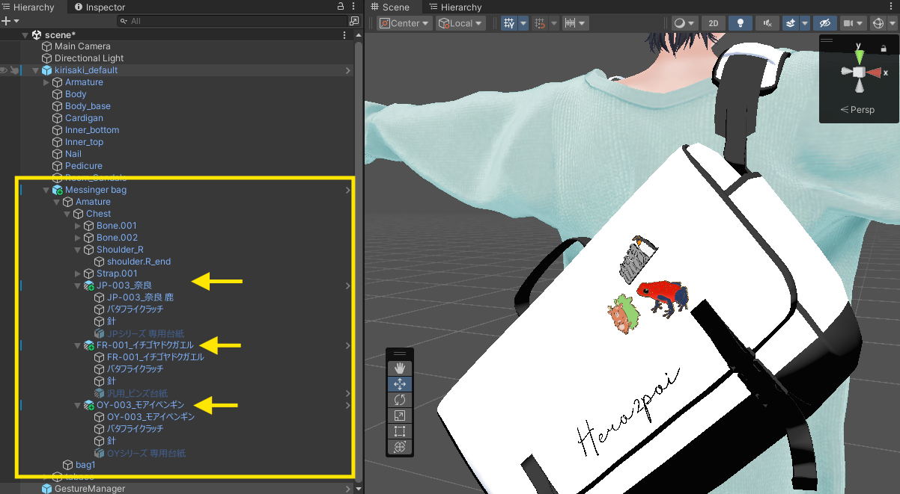

ピンバッジをアバターに付けるガイド
ご購入ありがとうございます！このガイドは、ピンバッジを自分のアバターに取り付けて、いつでも身につけられるようにする方法です。読みたいところから開いてください。

胸元・襟・頭、追加したバッグなど、好きな場所にピンバッジを取り付けられます🌐 「VRChatのワールドに置いて、来た人が掴んで遊ぶ」使い方をしたい方は、ワールドに設置するガイドをご覧ください。
ご購入ありがとうございます！このガイドは、ピンバッジを自分のアバターに取り付けて、いつでも身につけられるようにする方法です。読みたいところから開いてください。

胸元・襟・頭、追加したバッグなど、好きな場所にピンバッジを取り付けられます